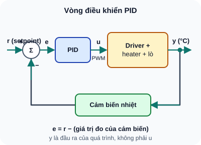

PID Control — Điều Khiển Vòng Kín
Thuật toán điều khiển phổ biến nhất trong công nghiệp — từ tủ lạnh đến tên lửa, máy bay đến robot — tất cả đều dùng PID.
- Hiểu vòng điều khiển kín — Setpoint, Error, Output, Feedback
- P (Proportional): tỷ lệ với sai số — phản ứng nhanh nhưng có offset
- I (Integral): tích phân sai số — loại bỏ steady-state error
- D (Derivative): đạo hàm sai số — giảm overshoot
- Triển khai PID rời rạc (discrete) trong vi điều khiển
- Tuning PID thực hành: bắt đầu với P, thêm I, thêm D
- Ứng dụng: điều khiển nhiệt độ lò sấy bằng PWM heating element
- Bảo vệ: windup prevention cho tích phân I
1. Vòng điều khiển kín (Closed-Loop Control)

Đọc mô tả D51-1
Setpoint r vào bộ cộng với dấu cộng; từ đó trừ giá trị đo. Sai số e vào bộ PID; PID cho u, ví dụ PWM, vào khối driver, heater và lò. Đầu ra y là nhiệt độ lò, cảm biến nhiệt đo y và đưa về bộ cộng với dấu trừ.
2. PID rời rạc — mô phỏng nối tiếp trên vi điều khiển
Mã dưới mô phỏng nhiệt độ qua Serial, không nối heater hoặc cảm biến thật. Mô hình nhiệt là giả định để quan sát thuật toán; khi chuyển sang phần cứng cần chọn cảm biến, tầng công suất và bảo vệ quá nhiệt theo thiết bị.
// PID Controller — mô phỏng nhiệt độ, không điều khiển heater
struct PID {
float Kp, Ki, Kd;
float setpoint;
float integral = 0;
float prevError = 0;
float integralMax = 255; // Windup protection
float compute(float measurement, float dt) {
float error = setpoint - measurement;
// Proportional
float P = Kp * error;
// Integral với anti-windup
integral += error * dt;
integral = constrain(integral, -integralMax, integralMax);
float I = Ki * integral;
// Derivative
float D = Kd * (error - prevError) / dt;
prevError = error;
// Tổng output, giới hạn 0–255
return constrain(P + I + D, 0, 255);
}
};
// Mô hình minh họa, KHÔNG đấu tải sưởi vào GPIO
PID tempPID = {2.0, 0.5, 0.1, 100.0}; // Kp, Ki, Kd, SP=100°C
const float DT = 0.1; // 100ms chu kỳ
float simulatedTemp = 25.0;
void setup() {
Serial.begin(115200);
}
void loop() {
float pwm = tempPID.compute(simulatedTemp, DT);
// Plant giả lập: gia nhiệt theo PWM, mất nhiệt về môi trường 25°C.
simulatedTemp += (0.03f * pwm - 0.02f * (simulatedTemp - 25.0f)) * DT;
Serial.printf("T=%.2f C, PWM=%.0f/255\n", simulatedTemp, pwm);
delay(100);
}
Chuyển sang phần cứng: GPIO chỉ xuất PWM tới tầng driver MOSFET/SSR phù hợp với điện áp, dòng và loại tải; không nối heater trực tiếp vào GPIO. Ví dụ lò 100°C dùng PT100 cùng mạch đo phù hợp hoặc cảm biến có dải đo trên 100°C. BME280 có dải nhiệt độ giới hạn ở 85°C, không phù hợp để đo điểm đặt này. Khi dùng heater điện lưới, cần thiết kế bảo vệ và cách ly theo yêu cầu thiết bị.
3. Tuning PID — Phương pháp thực hành
| Bước | Làm gì | Quan sát |
|---|---|---|
| 1. Chỉ P | Ki=0, Kd=0. Tăng Kp dần từ 0 | Hệ thống phản ứng. Còn steady-state error. Nếu oscillate → giảm Kp |
| 2. Thêm I | Tăng Ki từ 0 rất chậm | Steady-state error giảm dần về 0. Quá nhiều I → oscillate chậm |
| 3. Thêm D | Tăng Kd từ 0 | Overshoot giảm, phản ứng dứt khoát hơn. Quá nhiều D → nhiễu cao tần khuếch đại |
| 4. Fine-tune | Điều chỉnh nhỏ Kp/Ki/Kd | Cân bằng giữa tốc độ, overshoot và ổn định |
- Điều khiển nhiệt độ: Lò hàn reflow, máy ấp trứng, nhiệt kế incubator
- Điều khiển tốc độ motor: Robot dò line cần tốc độ 2 bánh bằng nhau
- Điều khiển góc servo: Camera gimbal chống rung
- Điều khiển áp suất/dòng: Máy bơm, van điện từ
- Cân bằng robot 2 bánh: Inverted pendulum (Kp lớn, Kd cần thiết)
1: k=0: e=50-0=50. P=2×50=100. I=50×0.1=5→Ki×I=0.5. D=(50-0)/0.1×0.5=250. u(0)=100+0.5+250=350.5 → constrain→255. k=1: measurement tăng (giả sử 20). e=30. P=60. I=(5+3)→0.8. D=(30-50)/0.1×0.5=-100. u(1)=60+0.8-100=-39.2→constrain→0. Thấy: D lớn làm output dao động mạnh lúc đầu. Tuning cần giảm Kd.